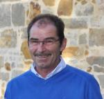

Klare, neutrale Gutachten bei Schäden, Mängeln und Streitfragen rund um Parkett, Laminat, Vinyl, Teppich, Linoleum und Kautschuk – fundiert geprüft und verständlich erklärt.

Von der ersten Einschätzung bis zum schriftlichen Gutachten – sachlich, gründlich und auf den Punkt.
Erstellung von Gerichtsgutachten und Beweissicherungsgutachten zur Klärung von Streitigkeiten und zur Dokumentation von Sachverhalten im Bereich Fußbodentechnik und Konstruktionen.
Gutachterliche/Sachverständigenleistungen für Schäden und Bewertung zur Ermittlung von Ursachen an Bodenbelägen und Parkett.
Unterstützung bei der Qualitätssicherung von Bodenbelags- und Parkettverlegung bereits in der Planungsphase und während der Ausführung. Objektbetreuung für Planer, Auftraggeber und Auftragnehmer.
Erstellung von Schiedsgutachten und gutachterlichen Stellungnahmen zur außergerichtlichen Konfliktlösung und fachlichen Einschätzung.
Für Privatpersonen, Unternehmen, Versicherungen und Gerichte.
Mein Name ist Gisbert Jung. Aus dem Handwerk komme ich selbst – als gelernter Fußbodenfachverleger, später Bau- und Oberbauleiter mit Projektsteuerung für Bodenbeläge und Parkett. Heute bin ich unabhängiger Sachverständiger für Fußbodentechnik.
Wenn am Boden etwas nicht stimmt, geht es oft um viel Geld und viel Ärger. Ich schaue mir die Sache vor Ort genau an, prüfe sachlich und halte das Ergebnis so fest, dass es für alle Beteiligten verständlich und belastbar ist.
Im zugrundeliegenden Fall war zu klären, ob ein nach ISO 17024 zertifizierter – jedoch nicht öffentlich bestellter – Gutachter vom Gericht herangezogen werden kann. Das Gericht bejahte dies ausdrücklich: Die Zertifizierung nach DIN ISO 17024 stellt einen Nachweis der Sachkunde dar und steht der öffentlichen Bestellung in nichts nach.
Das Gericht stellte klar, dass eine fehlende öffentliche Bestellung kein Hinweis auf fehlende Sachkunde ist und dass jedes Gericht frei in der Benennung eines geeigneten Sachverständigen ist. Zwar ist laut § 404 Abs. 2 ZPO ein öffentlich bestellter Sachverständiger vorzuziehen – dabei handelt es sich jedoch lediglich um eine Ordnungsvorschrift.
Für den als nach DIN ISO 17024 zertifizierten Sachverständigen bedeutet dieses Urteil: Er ist bezüglich der Anerkennung seiner Qualifikation einem öffentlich bestellten Sachverständigen in jeder Hinsicht gleichzusetzen.
Sie haben ein Anliegen rund um Ihren Bodenbelag/-Parkett? Rufen Sie an oder schreiben Sie mir – ich melde mich zeitnah bei Ihnen.